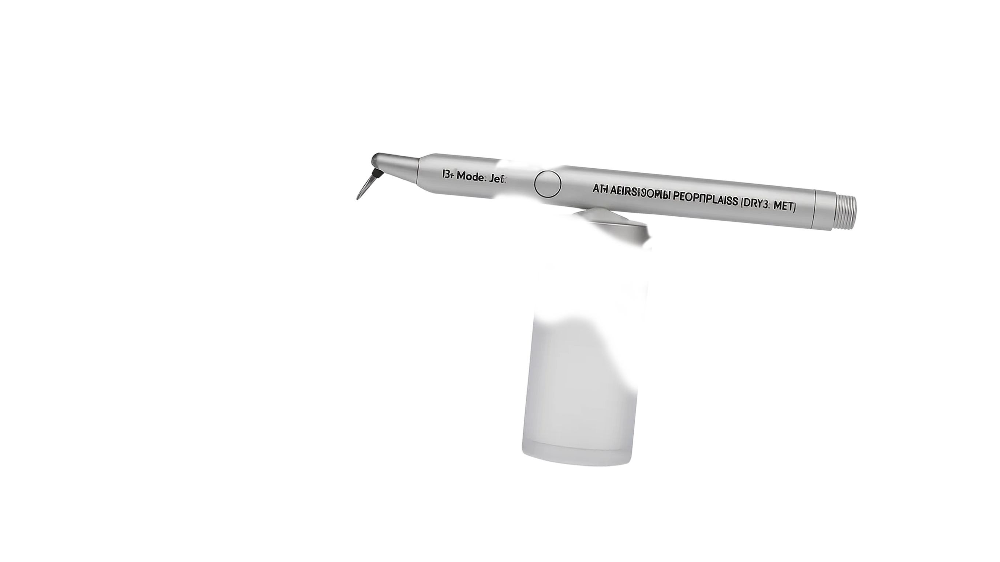
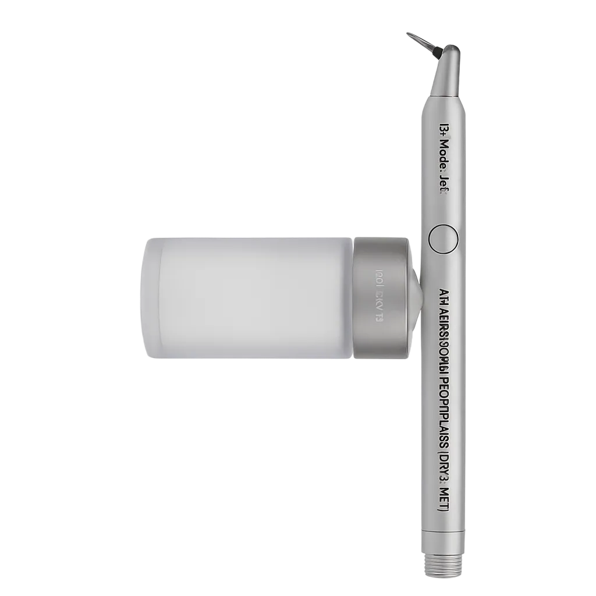
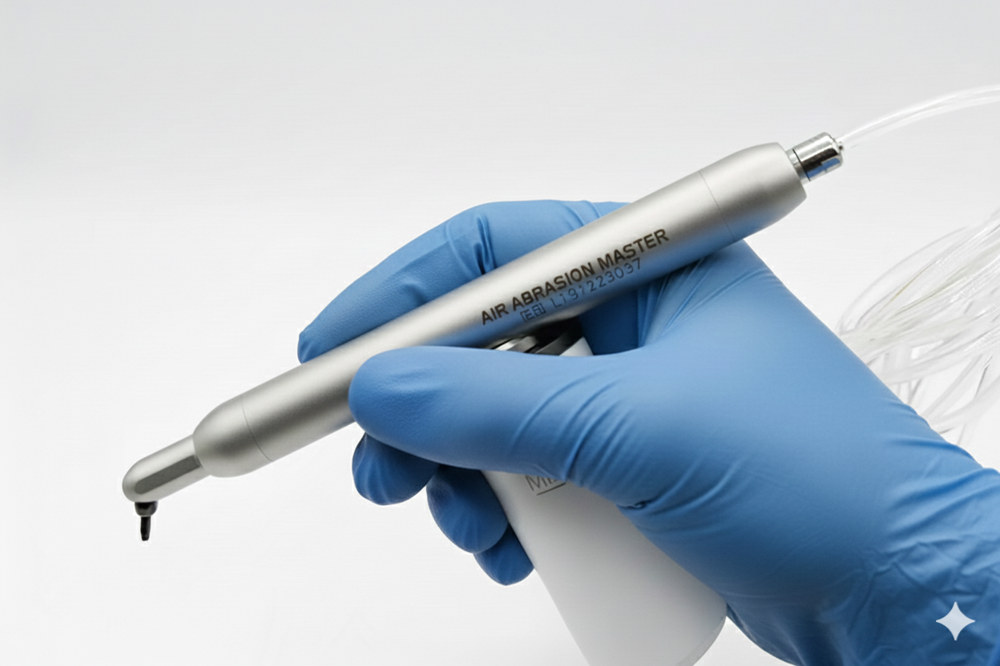
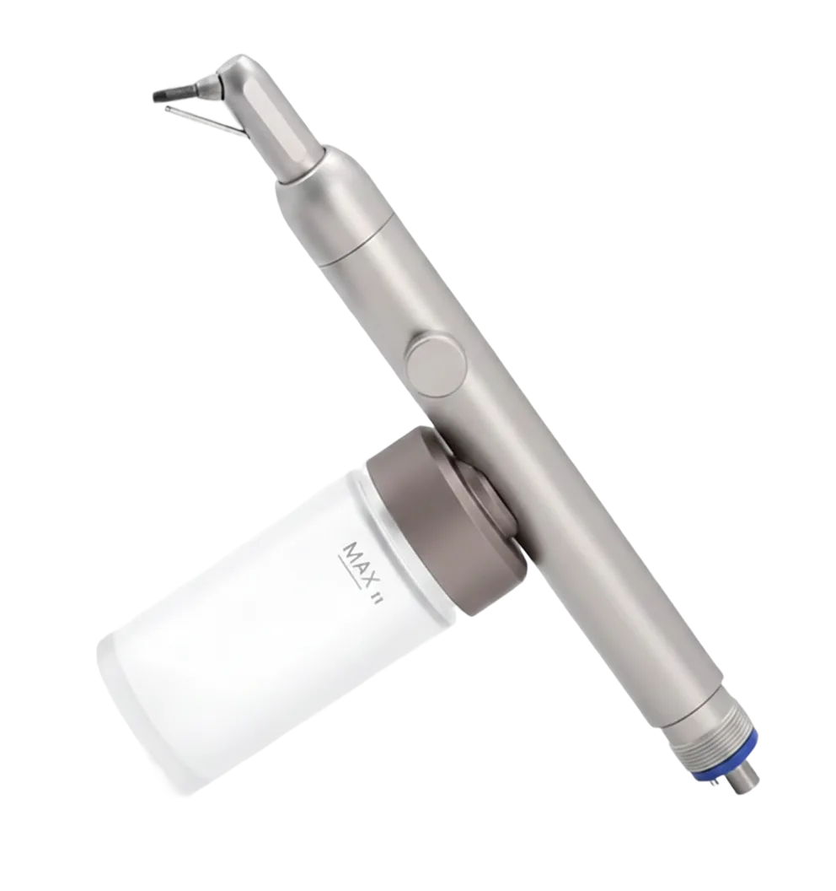
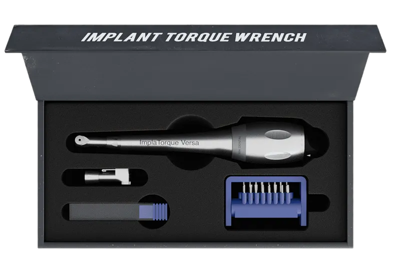

Prophylaxis handpieces that help remove stains are relative modern, and hence heavy on the pocket. Regardless of brand and price, most traditional units suffer with clogging issues and inconsistent flow of powder. Such inefficiencies not only slow down procedures but also compromise precision and patient comfort.

Bi-Mode Jet
Air Abrasion & Prophylaxis Handpiece
Dr. Moez I. Khakiani
Renowned Prosthodontist and Mentor


Genius Independent Water Nozzle That
Prevents Clogging During Wet Use
Dual-Mode Design for Both
Air Abrasion and Polishing
Compatible With Aluminum
Oxide & Bicarbonate Powders
High Grade German
Steel Body
From Clogging to Control
Engineered to eliminate clogging and deliver
predictable, precise performance.

But all this is talk of the past, as we offer you the next-generation handpiece with a genius design twist that incorporates an independent water nozzle; allowing seamless dry and wet use.
Whether you're performing minimally invasive cavity preps or sandblasting crowns, or gently removing stains; this dual-mode device shall enhance your workflow, improve its efficiency, and deliver precise, comfortable, and predictable results.
Ideal Indications
Dry Mode
- Enamel and dentin etching prior to bonding
- Removal of residual cements from crown interiors
- Pre-treatment of zirconia and metal surfaces for improved adhesion
- Surface roughening for composite repairs
- Removing adhesive remnants after debonding orthodontic brackets



Wet Mode
- Supragingival stain and plaque removal
- Subgingival biofilm disruption
- Finishing enamel surfaces post scaling and root planing
- Gentle polishing of restorations and exposed root surfaces
- Final surface cleansing before adhesive procedures
Key Features & Benefits
Dual-Mode Versatility
Perform air abrasion and polishing with one device.
Independent Water Nozzle
Eliminates clogging and ensures smooth transitions.
Two-Powder Compatibility
Use aluminum oxide for prep, bicarbonate for polishing.
Clog-Resistant Design
Maintains steady flow, reduces maintenance time.
Reduced Aerosol Dispersion
Water mist contains powder, enhancing safety.
Precision Spray Pattern
Enables conservative and targeted treatments.
Lightweight and Ergonomic
Designed for all-day comfort and better control.
Built for Multi-Specialty Use
Ideal for both restorative and hygiene applications.
Download the Instruction Manual

How to Use the
Bi-Mode Jet

Step 1
Fill the powder chamber with your desired aluminum oxide grit.
Step 2
Attach the appropriate angled head (maxillary or mandibular) based on the site of treatment.
Step 3
Adjust air pressure to the recommended range (typically 40-80 psi).
Step 4
Position the nozzle 2-5 mm from the surface to be treated.
Step 5
Activate the foot control and press the button on the side of the handpiece to begin abrasion; use steady, controlled movements.
Step 6
Stop and inspect the treated area; repeat if additional prep/polish is needed.
Step 7
After every use, flush the handpiece with air and clean the nozzle with the provided pin, so as to prevent accidental clogging.
What's Inside the Box?
1x User Interaction Manual
1x Cleaning Pin
1x Bi-Mode Jet Handpiece (Dry+Wet Use)
2x Powder Dispenser Bottle
1x Protective Storage Box

There are multiple air abrasion units available in the market; some really cheap and others insanely expensive. And as a Prosthodontist, I would always wonder
'Kaunsa Kharidu?'
If you are looking for only an Air-Abrasion Handpiece, then check out AeroJet: Air Abrasion Master (Dry)
You can click here if you need help choosing between the two.
Choosing the Right Air
Abrasion Unit for Your Practice
Not sure which air abrasion unit suits your needs?
Here's a quick comparison to help you decide:

Specifications
- Features
- Operating Modes
- Primary Use
- Powder Containers
- Abrasive Media
- Nozzle Configuration
- Material
- Best for
- Prevents Powder Clogging?
Bi-Mode Jet
- Dual-Mode Action: Abrasion & Polishing
- Dry & Wet: with a Novel Independent Water Nozzle
- Air abrasion + stain removal & prophylaxis
- Dual for different powder type
- Aluminium Oxide & Sodium Bicarbonate
- Single universal nozzle
- High Grade German Steel
- General dentistry & hygiene treatments
- ✅ Yes, due to separate water nozzle
AeroJet
- Abrasion only
- Dry only
- Cement & bonding prep + Sandblasting crowns
- Dual for different granule sizes of aluminium oxide only
- Aluminium Oxide Only
- Two nozzles for different angles (maxillary & mandibular)
- Sturdy Medical Grade Steel body
- Prosthodontists, lab work & indirect restorations
- ❌ No, requires regular maintenance
User Reviews and Feedback
See how Bi-Mode Jet has transformed users
experiences through their own words
Emma Johnson
Traditional air abrasion handpieces often interrupted procedures due to clogging. With Bi-Mode Jet, the powder flow remains consistent, and switching modes is seamless.
John Doe
The precision and control offered by Bi-Mode Jet are excellent. It supports minimally invasive dentistry without compromising patient comfort.
Emily Johnson
Our team adapted to Bi-Mode Jet almost immediately. It's intuitive, efficient, and far more reliable than other systems we've used.
Michael Brown
Clogging used to be a frequent issue during air abrasion procedures. Since switching to Bi-Mode Jet, the powder flow has been consistent, and procedures feel far more controlled.
David Wilson
The dual-mode capability is genuinely useful in daily practice. Being able to switch between dry and wet modes without changing tools saves time and reduces interruptions.
Laura Martinez
What stands out is how smoothly the handpiece performs throughout the day. Even with continuous use, maintenance remains minimal and performance stays reliable.
James Taylor
The independent water nozzle clearly solves many of the limitations of traditional handpieces. It's a thoughtful design that improves both efficiency and consistency.
Olivia Anderson
My patients are more comfortable during stain removal procedures. Reduced procedure time and smoother operation make a noticeable difference.
Frequently
Asked
Questions
Bi-Mode Jet features an independent water nozzle that allows seamless switching between dry and wet modes, eliminating clogging and ensuring consistent powder flow.
Yes. It is designed to support both air abrasion and polishing workflows in one device.
The independent water nozzle is specifically intended to reduce clogging and keep powder flow more consistent.
It is positioned for use with aluminum oxide and bicarbonate powders.
The design is meant to make wet and dry transitions seamless during routine treatment.
Yes. The device is presented as a fit for conservative, precise air abrasion and surface treatments.
The workflow is straightforward, though proper clinical onboarding is always recommended before routine use.
Still Unsure?
Chat with our experts on WhatsApp